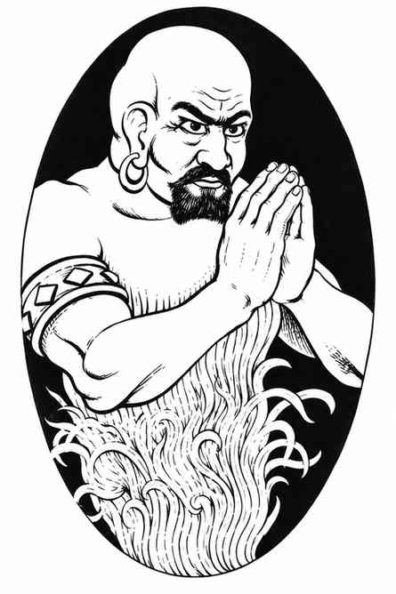

风巨灵 · Djinni
 |
|
风巨灵来自气元素位面。它们每天可以施展下列任一魔法能力一次：为 2–12 人创造有营养的食物；为 2–12 人创造水或葡萄酒；永久创造柔软物品（约 16 立方尺）或木制物品（约 9 立方尺）；创造存在时间有限的金属物品（金属越坚硬，存在时间越短，例如黄金约存在 24 小时，风巨灵钢只存在 1 小时），重量最多约 1,000 金币；创造带有视觉与听觉效果的幻象，除非遭魔法解除或被触碰，否则会持续存在；变为隐形、气态，施展御风而行，或化为旋风。
风巨灵的旋风呈圆锥形，底部直径 1 寸、顶部直径 3 寸、高度最多 7 寸（依风巨灵意愿而定）。形成或消散旋风各需 1 回合。旋风持续 1 个近战轮，对遇到的非气元素生物造成 2–12 点伤害，并卷走、杀死它遇到的所有生命骰少于 2 的生物。受到气元素位面生物攻击时，风巨灵所受伤害减 1，攻击骰也承受 −1 惩罚。
风巨灵徒步或飞行时都能不知疲倦地携带最多 6,000 金币重量。短时间内可携带双倍重量：徒步 3 回合；若飞行，只能保持 1 回合。当携带重量低于最大值时，每少 1,000 金币重量，徒步或飞行时间便增加 1 回合。此后须休息 6 回合。
俘获并奴役风巨灵的事，最好交由裁判裁定。值得注意的是，善良的主人通常会促使风巨灵更加卖力、表现更佳；苛刻残暴的主人则会适得其反。风巨灵有 1% 的概率是贵族个体，能够赐予主人 3 个愿望，但不会提供其他服务；第三个愿望实现后，它便脱离奴役。贵族风巨灵的力量与火巨灵相当，拥有 10 个生命骰，造成 3–24 点伤害，旋风造成 3–18 点伤害。
风巨灵会说自己的语言，并具有有限形式的心灵感应；它们能与遇到的任何有智慧的人或野兽交谈。